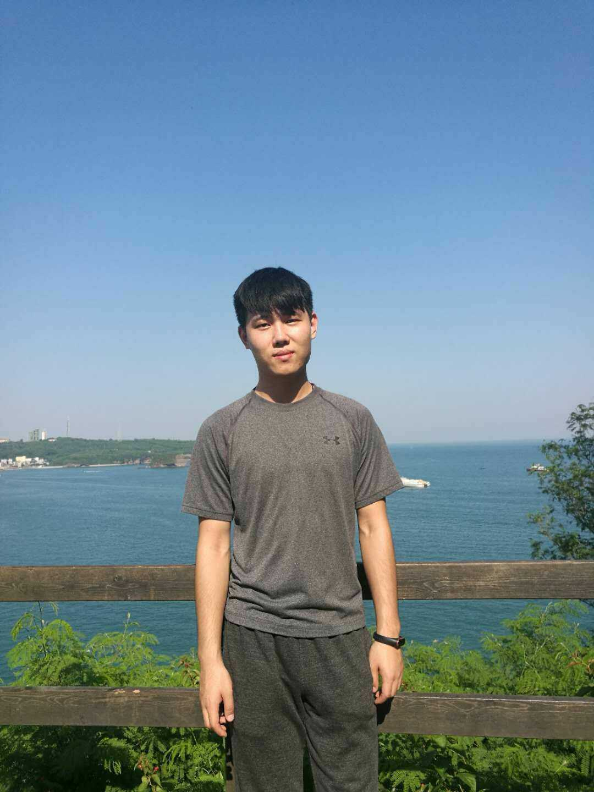
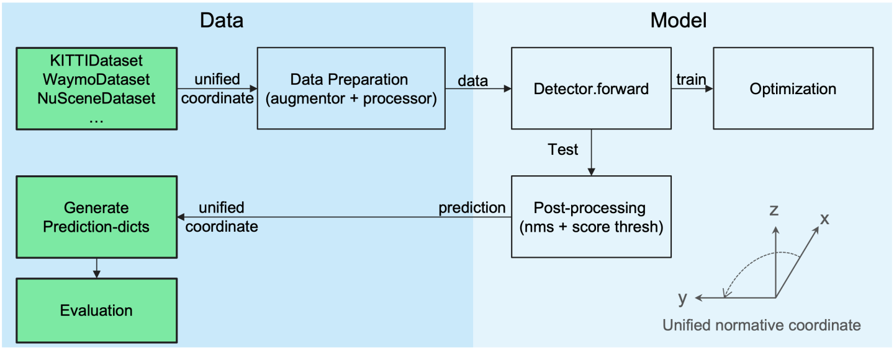

Jihan Yang
Ph.D. student |
 |
Biography
I am currently a PhD student (2020-) at EEE, The University of Hong Kong, advised by Dr. Xiaojuan Qi. Before that I obtained my Bachelor's degree from Sun Yat-sen University, supervised by Prof. Liang Lin and Prof. Guanbin Li. I am also working closely with Ruijia Xu, Dr. Shaoshuai Shi, Runyu Ding and Dr. Zhe Wang.
My research interests focus on machine perception and deep learning, especially the unsupervised learning, tranfer learning and 2D/3D scene understanding related topics.
News
- [2022/09] One paper accepted by T-PAMI.
- [2022/09] One paper accepted by NeurIPS 2022.
- [2022/07] One paper accepted by ECCV 2022.
Codebase
|  |
OpenPCDet: An Open-source Toolbox for 3D Object Detection from Point Cloud
OpenPCDet Development Team June 2020 [Code] [Bibtex] 
|
Publications
*: Equal Contribution
- Towards Efficient 3D Object Detection with Knowledge Distillation
Jihan Yang, Shaoshuai Shi, Runyu Ding, Zhe Wang, Xiaojuan Qi
Advances in Neural Information Processing Systems (NeuraIPS) 2022. -
ST3D++: Self-training for Unsupervised Domain Adaptation on 3D Object Detection
Jihan Yang, Shaoshuai Shi, Zhe Wang, Hongsheng Li, Xiaojuan Qi
IEEE Transactions on Pattern Analysis and Machine Intelligence (T-PAMI) 2022. -
DODA: Data-oriented Sim-to-Real Domain Adaptation for 3D Indoor Semantic Segmentation
Runyu Ding*, Jihan Yang*, Xiaojuan Qi
European Conference on Computer Vision (ECCV), 2022.
-
Knowledge Distillation as Efficient Pre-training: Faster Convergence, Higher Data-efficiency, and Better Transferability
Ruifei He, Shuyang Sun, Jihan Yang, Song Bai, Xiaojuan Qi.
IEEE Conference on Computer Vision and Pattern Recognition (CVPR), 2022. [Code]

-
Re-distributing Biased Pseudo Labels for Semi-supervised Semantic Segmentation: A Baseline Investigation
Ruifei He*, Jihan Yang*, Xiaojuan Qi
IEEE International Conference on Computer Vision (ICCV), 2021. [Oral] [Code] -
ST3D: Self-training for Unsupervised Domain Adaptation on 3D Object Detection
Jihan Yang*, Shaoshuai Shi*, Zhe Wang, Hongsheng Li, Xiaojuan Qi
IEEE Conference on Computer Vision and Pattern Recognition (CVPR), 2021. [Code]


-
The Top-Performing LiDAR-only Solutions for 3D Detection / 3D Tracking / Domain Adaptation of Waymo Open Dataset Challenges
Shaoshuai Shi, Chaoxu Guo, Jihan Yang, Hongsheng Li
Technical report of top-performing LiDAR-only solutions to Waymo Open Dataset Challenges at Workshop of CVPR 2020. [Code] -
An adversarial perturbation oriented domain adaptation approach for semantic segmentation
Jihan Yang, Ruijia Xu, Ruiyu Li, Xiaojuan Qi, Xiaoyong Shen, Guanbin Li, Liang Lin
AAAI, 2020.
-
Larger norm more transferable: An adaptive feature norm approach for unsupervised domain adaptation
Ruijia Xu, Guanbin Li, Jihan Yang, Liang Lin
IEEE International Conference on Computer Vision (ICCV), 2019. [Oral] [Code]
Best Paper Award Nomination (one of the seven among 1,075 accepted papers) refer to here.

Experience
-
Research Intern, May 2020 - Present, Autonomous Driving Group of SenseTime, China.
Working with Dr. Zhe Wang.
- Research Intern, Feb 2019 - Feb 2020, Tencent Youtu Lab, China.
Working with Dr. Ruiyu Li and Dr. Xiaoyong Shen.
- Research Intern, Jul 2018 - Sep 2019, YITU Technology, China.
Honors & Awards
| 2nd place on 3D detection, 3D tracking and domain adaptation three tracks of Waymo Open Challenges | 2020 |
| Postgraduate Scholarship, HKU | 2020 - 2024 |
| Best Paper Nomination, IEEE International Conference on Computer Vision (0.2%) | 2019 |
| Excellent Graduate Award of Sun Yat-sen University (2%) | 2019 |
| Excellent Dissertations of Sun Yat-sen University (2%) | 2019 |
| First Prize Scholarship of Sun Yat-sen University (4%) | 2017, 2018 |